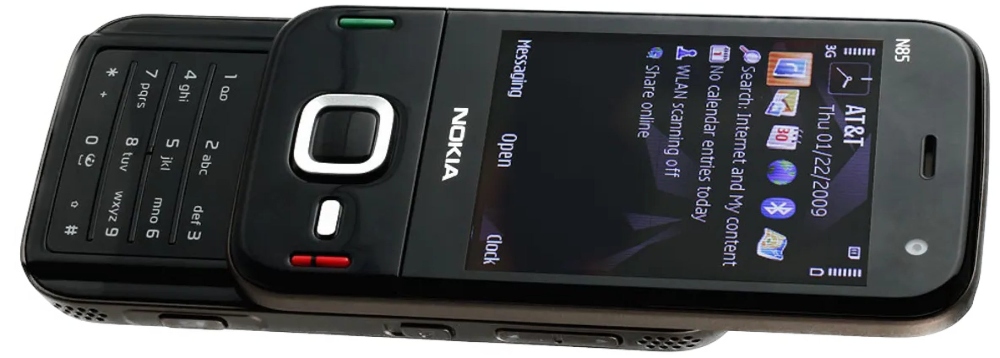
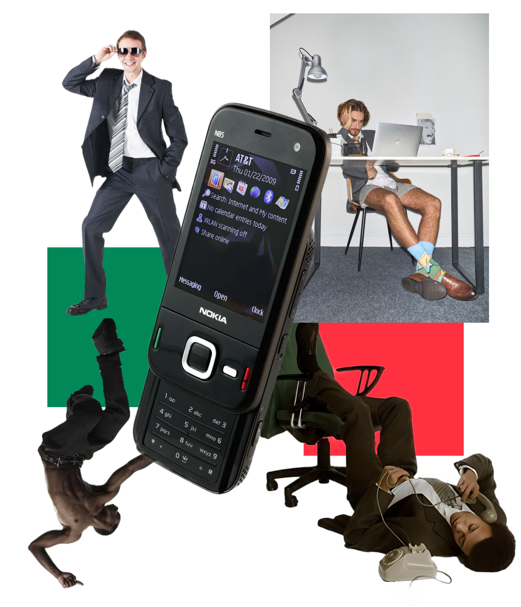
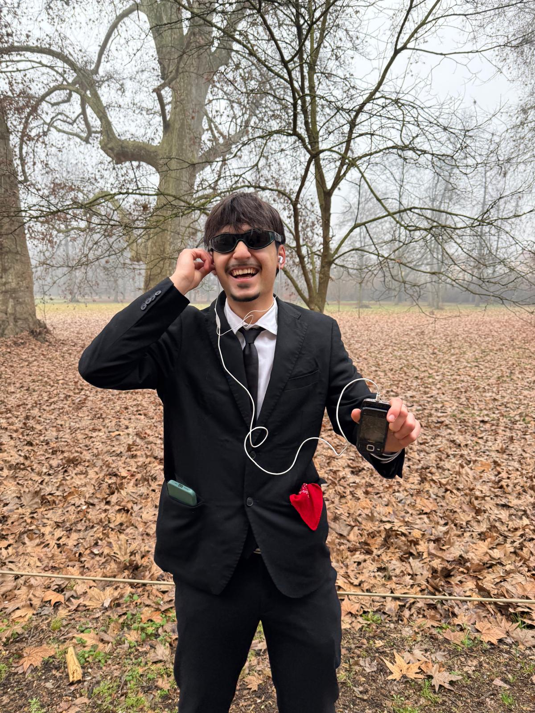
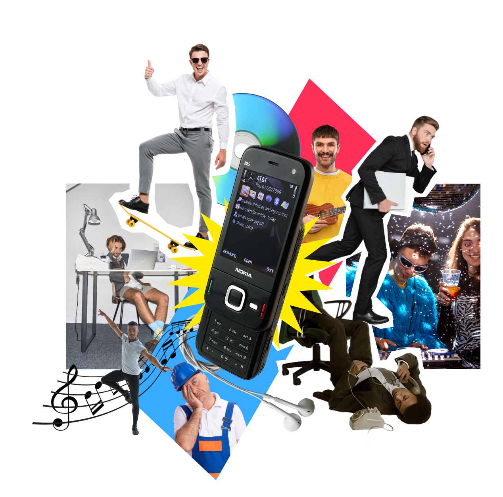
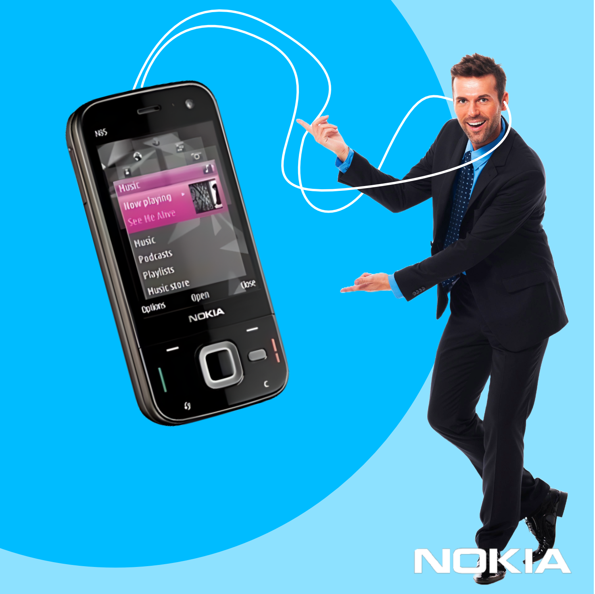
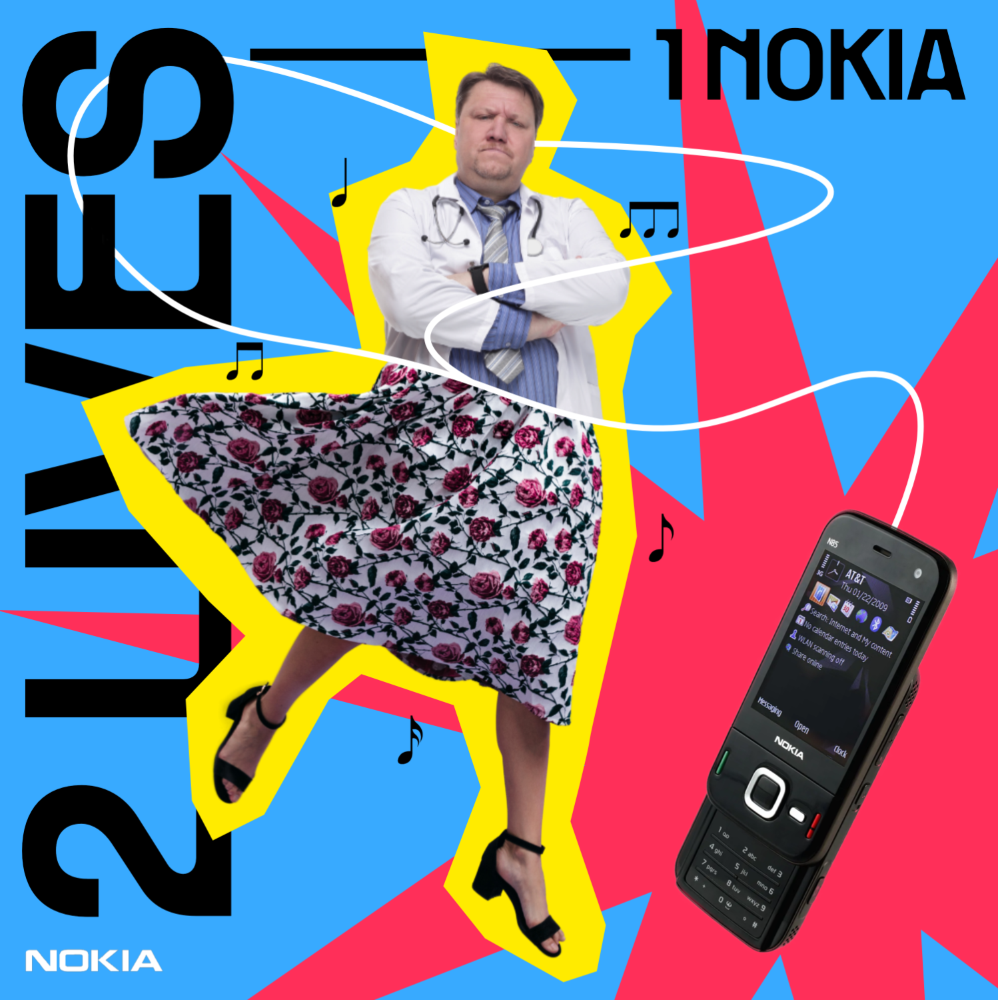
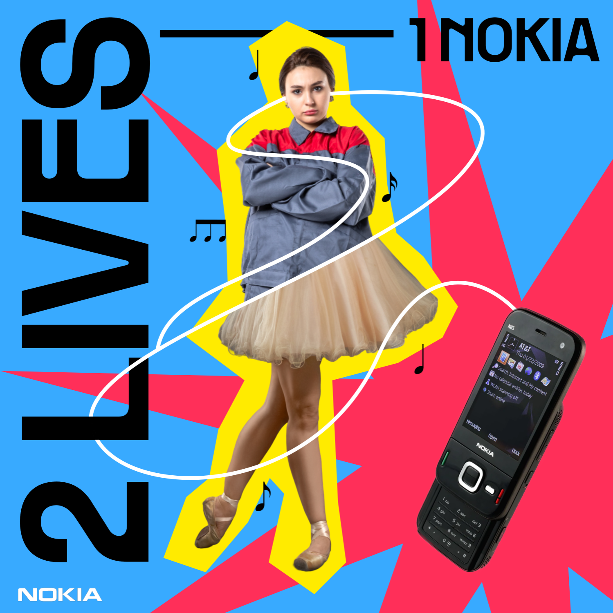
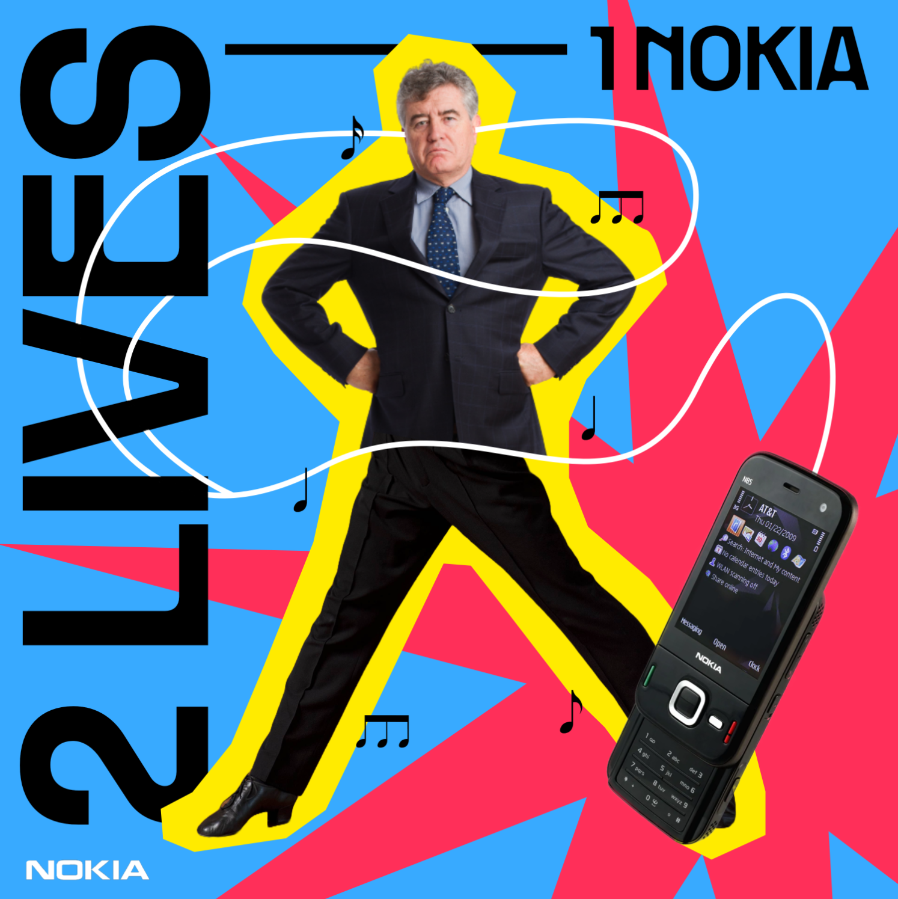
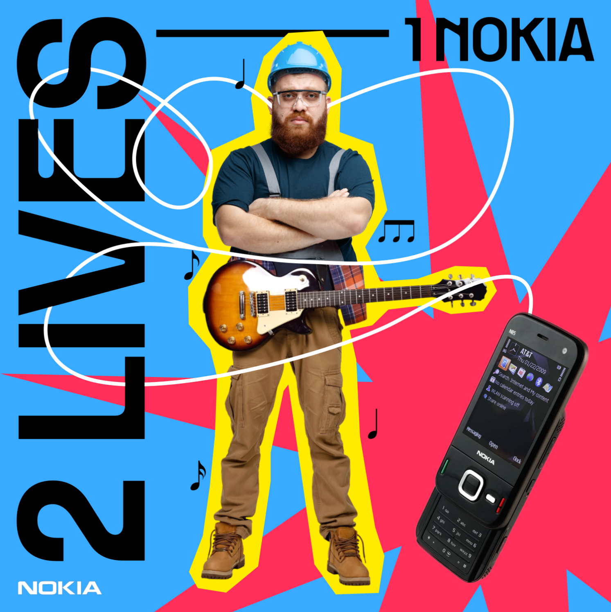

PUBBLICITA'
PER NOKIA
N85
Il progetto nasce da un lavoro scolastico durante il primo periodo del primo anno di Università. Si chiedeva un'analisi di un telefono anni 2000, che prevedeva la consegna di tavole tecniche e rappresentazioni outline, oneline, 3d e flat in illustrator. Oltre a questo, si chiedeva di concepire una semplice campagna pubblicitaria, composta da una moodboard e quattro post di instagram, stesso stile e messaggio.

E' stato scelto il nokia n85 (l'unico che avevamo disponibile).
Dai primi disegni era chiaro che ciò che separava il telefono dagli altri erano due cose: i tasti verde e rosso per le chiamate e la capacità di diventare un mp3 player se si slidava lo schermo verso il basso.

Nasce così una primissima moodboard, che definisce i due colori principali e i due mondi che si uniscono nello stesso telefono: lavoro e musica.
Con questa idea, dopo i primi confronti con il gruppo il primo tentativo di pubblicità consisteva nel trasformarci nel telefono vero e proprio.
Vestiti eleganti e con dei fazzoletti nelle tasche, abbiamo provato a sintetizzare tutto ciò che il telefono voleva comunicare.

Inutile dire che le nostre capacità fotografiche limitivano un po' la riuscita del progetto...
Il telefono si vedeva poco, non avevamo posti dove fotografare, era complesso tirar fuori 4 post da queste foto.
Ci siamo ritrovati per discutere nuovamente sul da farsi, e abbiamo deciso di puntare sulla dualità musica-lavoro e sul fatto che il telefono avesse uno schermo ad alta definizione.
Ho ricreato così la moodboard, avendo come base i tre colori primari

Dopo vari tentativi, ho deciso di rendere il tutto molto più giocoso e pop, utilizzando cut-out e colori sgargianti.
I primi tentativi per le pubblicità però erano vuoti e senza alcuna anima

Sembra di star guardando una pessima pubblicità di prodotto scam e fake. Le immagini stock però erano la nostra unica strada e il la foto del telefono doveva essere presente nel post.
Mi piacevano però i cavetti delle cuffie, che davano un po' di movimenti in quel mortorio blu e azzurro.
Ho quindi deciso di rendere centrali i cavetti e utilizzarli per far passare l'idea di una doppia vita, tra lavoro e tempo libero.




TORNA